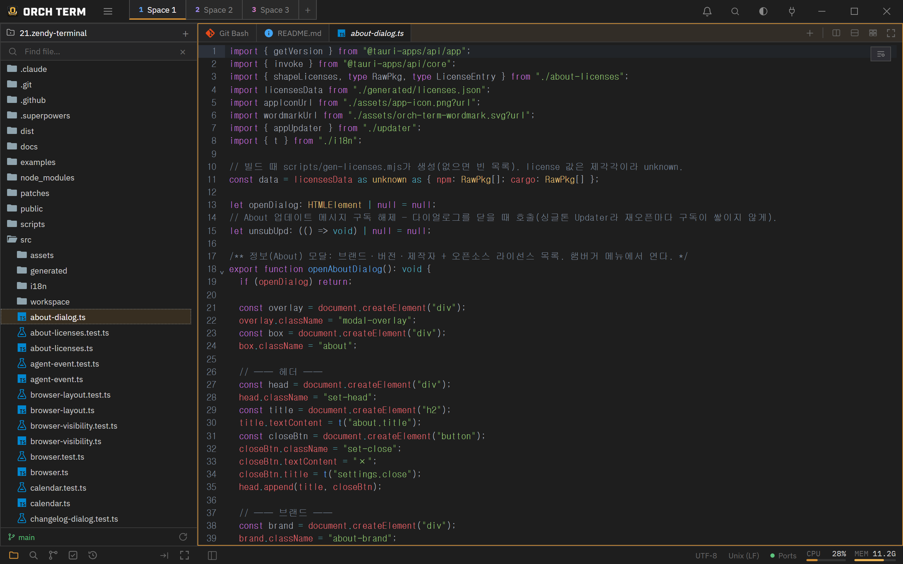

Core features · Code editor
Code editor
Edit files opened from the Explorer right away. Auto-reload on external changes, open/save in every encoding down to EUC-KR and UTF-16, EOL (CRLF) preservation, and GitLens-style blame.
Opening files
Double-click a file in the left Explorer to open it as a new editor tab in the active pane. For non-text binaries (PNG, exe, etc.), instead of the editor an "Open with the default app" fallback panel appears. On the right of the bottom status bar, the detected encoding · EOL label is shown only for editor tabs.

Auto-reload on external changes
When an open file is modified externally (another tool, git pull, an AI CLI, etc.), the editor re-reads it from disk. With no unsaved edits it quietly swaps in the new content; with unsaved edits it first asks whether to overwrite. You can also re-read manually anytime with the button in the status bar.
Encoding — open any file
Open Korean legacy (EUC-KR/CP949), Japanese (Shift-JIS), Chinese (GBK·Big5), Western European (Windows-1252), and UTF-16 (LE/BE) files. The moment you open one, the encoding is auto-detected and shown as a label in the status bar.
If misdetection makes text look garbled, click the encoding label in the status bar. The top group, "Reopen with encoding", re-decodes the disk bytes with a different encoding (it doesn't write the file — lossless) to fix the misdetection, while the bottom group, "Convert encoding and save", changes the document to that encoding and saves.
When saving to a legacy encoding, if there's a character absent from that encoding (e.g., an emoji), rather than quietly corrupting it the editor blocks the save and brings up a choice modal. If everything maps, it saves as-is without asking.
EOL · line-ending preservation
It detects the line-ending style (CRLF/LF/CR) on open and preserves the original EOL on save. Clicking the EOL segment in the status bar brings up a conversion menu: Windows (CRLF)·Unix (LF)·Macintosh (CR).
GitLens-style blame
Turn on blame with Ctrl+Shift+B (or the editor's top-right button), and the gutter gains a per-line author · relative time. Lines that continue the same commit are shown only on the group's first line, and lines changed in the working tree appear as Uncommitted. Clicking a gutter line links to the commit details in the source control panel, and hovering shows the commit hash, author, time, and subject as a tooltip.

Keyboard shortcuts
| Key | Action |
|---|---|
| Ctrl+Shift+B | Toggle Git Blame |
| Ctrl+F | Find in a single file |
| Ctrl+S | Save (keep original encoding) |
| Palette | Reopen with encoding / convert and save |